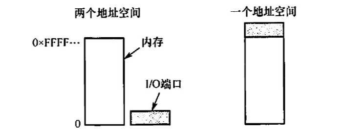

2022.09.18
分类
IO接口
IO端口：指的是设备控制器中可以被CPU直接访问的寄存器
三类寄存器（数据寄存器、状态寄存器、控制寄存器）
独立编址、统一编址

程序直接控制方式
中断驱动方式
DMA方式
通道
以下关于设备属性的叙述中，正确的是(）。 A. 宇符设备的基本特征是可寻址到宇节，即能指定输入的源地址或输出的目标地址 B. 共享设备必须是可寻址的和可随机访问的设备 C.共享设备是指同一时间内允许多个进程同时访问的设备 D.在分配共享设备和独占设备时都可能引超进程死锁
【答案】：A -> B。可寻址是块设备的基本特征，A 选项不正确；共享设备是指一段时间内允许多个进程同时访 问的设备，因此C选项不正确。分配共享设备是不会引起进程死锁的，D选项不正确
虛拟设备是指（）. A. 允许用户使用比系统中具有的物理设备更多的设备 B. 允许用户以标准化方式来使用物理设备 C. 把一个物理设备变换成多个对应的逻辑设备 D. 允许用户程序不必全部裝入主存便可使用系统中的设备
【答案】：A -> C。虛拟设备是指采用虚拟技术将一台独占设备转换为若干逻辑设备。引入虛拟设备是为了克服 独占设备速度慢、利用率低的特点。这种设备并不是物理地变成共享设备，一般的独享设备也不能转化为共享设备。只是用户使用时感觉像是共享设备。
磁盘设备的IO 控制主要采取（）方式。 A.位 B. 字节 C.帧 D. DMA
【答案】：D
为了便于上层软件的编制，设备控制器通常需要提供（）。 A． 控制奇存器、状态寄存器和控制命令 B. IO地址寄存器、工作方式状态寄存器和控制命令 C.中断寄存器、控制奇存器和控制命令 D控制寄存器、编程空问和控制逻辑寄存器
【答案】：A
在设备控制器中用于实现设备控制功能的是（ ）. A. CPU B. 设备控制器与处理器的接口 C. IO逻輯 D.设备控制器与设备的接口
【答案】：D -> C。接口用来传信号。
在设备管理中，设备映射表（DMT）的作用是（） A.管理物理设备 B.管理逻辑设备 C．实现输入/输出 D.建立逻輯设备与物理设备的对应关系
【答案】：D
DMA 方式是在（）之间建立一条直接数据通路。 A. IO设备和主存 B.两个IO设备 C. IO设备和CPU D. CPU和主存
【答案】：A
通道又称IO 处理机，它用于实现（）之间的信息传输。 A内存与外设 B. CPU与外设 C.内存与外存 D. CPU 与外存
【答案】：A
在操作系统中，（）指的是一种硬件机制。 A.通道技术 B. 缓冲池 C. SPOOLing 技术 D.内存覆盖技术
【答案】：A
若IO设备与存储设备进行数据交换不经过CPU 来完成，則这种数据交换方式是（）. A．程序查询 B. 中断方式 C. DMA 方式 D.无条件存取方式
【答案】：C
计算机系统中，不属于 DMA 控制器的是（） A． 命令/状态寄存器 B. 内存地址寄存器 C.数据守存器 D.堆栈指针守存器
【答案】：D
（）用作连接大量的低速或中速IO设备 A.数据选择通道 B.宇节多路通道 C．数据多路通道 D. IO处理机
【答案】：D -> B，字节多路通道，它通常含有许多非分配型子通道，其数量可达几十到几百个，每个通道连接 一台设备，并控制该设备的 IO 探作。这些子通道按时间片轮转方式共享主通道。各个通道循环使用主通道，各个通道每次完成其 IO 设备的一个字节的交换，然后让出主通道的使用权。这样，只要字节多路通道扫描每个子通道的速率足够快，而连接到子通道上的设备的速率不太高时，便不至于丢失信息。
在下列问题中，（）不是设备分配中应考虑的问题。 A.及时性 B.设备的固有属性 C.设备独立性 D.安全性
【答案】：B -> A。设备的盾有属性决定了设备的使用方式；设备独立性可以提高设备分配的灵活性和设备的利 用率；设备安全性可以保证分配设备时不会导致永久阻塞。设备分配时一般不需要考虑及时性。
将系统中的每台设备按某种原则统一进行编号，这些编号作为区分硬件和识别设备的代号，该编号称为设备的（）。 A.绝对号 B.相对号 C.类型号 D.符号
【答案】：D -> A
关于通道、设备控制器和设备之问的关系，以下叙述中正确的是(） A． 设备控制器和通道可以分别控制设备 B. 对于同一组揄入/输出命令，设备控制器、通道和设备可以并行工作 C.通道控制设备控制器、设备控制器控制设备工作 D以上答案都不对
【答案】：D -> C
有关设备管理的叙述中，不正确的是（）。 A. 通道是处理揄入/输出的软件 B. 所有设备的启动工作都由系统统一来做 C. 来自通道的IO 中断事件由设备管理负责处理 D. 编制好的通道程序是存放在主存中的
【答案】：A
IO中断是CPU与通道协调工作的一种手段，所以在（）时，便要产生中断。 A.CPU 执行“启动 IO” 指令而被通道拒绝接收 B.通道接收了 CPU 的启动请求 C.通道完成了通道程序的执行 D.通道在执行通道程序的过程中
【答案】：C
一个计算机系统配置了2台绘图机和3台打印机，为了正确驱动这些设备，系统应该提供(）个设备驱动程序。 A.5 B.3 C.2 D. 1
【答案】：C
将系统调用参数翻译成设各操作命令的工作由（）完成 A． 用户层IO B. 设备无关的操作系统软件 C.中断处理 D.设备驱动程序
【答案】：D -> B
一个典型的文本打印页面有50行，每行80个字符，假定一台标准的打印机每分钟能打印6页，向打印机的输出奇存器中写一个字符的时问很短，可忽略不计。若每打印一个宇符都需要花费 50us 的中断处理时问（包括所有服务），使用中断驱动I/0 方式运行这台打印机，中断的系统开销占 CPU 的百分比为（). A. 2% B. 5% C. 20% D. 50%
【答案】：A
【2010统考典题】本地用户通过键盘登录系统时，首先获得键盘揄入信息的程序是(）。 A命令解释程序 B. 中断处理程序 C.系统调用服务程序 D．用户登录程序
【答案】：A -> B
【2011 统考真题】用户程序发出磁盘UO 请求后，系统的正确处理流程是（）。 A．用户程序一系统调用处理程序一中断处理程序一设备驱动程序 B.用户程序一系统调用处理程序一设备驱动程序一中断处理程序 C．用户程序一设备驱动程序一系统调用处理程序一中断处理程序 D.用户程序一设备驱动程序一中断处理程序一系统调用处理程序
【答案】：A -> B
【2012 統考真题】操作系统的 IO 子系统通常由4 个层次组成，每层明确定义了与邻近层次的接口，其合理的层次組织排列顺序是（）。
A． 用户级VO软件、设备无关软件、设备驱动程序、中断处理程序 B. 用户级VO软件、设备无关软件、中断处理程序、设备驱动程序 C. 用户级IO软件、设备驱动程序、设备无关软件、中断处理程序 D.用户级IO软件、中断处理程序、设备无关软件、设备驱动程序
【答案】：A
【2013 统考真题】用户程序发出磁盘 VO 请求后，系统的处理流程是：用户程序一系统调用处理程序一设备驱动程序一中断处理程序。其中，计算数据所在磁盘的柱面号、磁头号、扇区号的程序是（）. A.用户程序 B.系统调用处理程序 C.设备驱动程序 D.中断处理程序
【答案】：C
【2017 统考真题】系统将数据从磁盘读到内存的过程包括以下操作： ① DMA 控制器发出中断请求 ② 初始化 DMA 控制器并启动磁盘 ③ 从磁盘传输一块数据到内存缓冲区 ④执行 “DMA 结束” 中断服务程序 正确的执行顺序是（）。 A 3124 B 2314 C 2134 D 1243
【答案】：C -> B